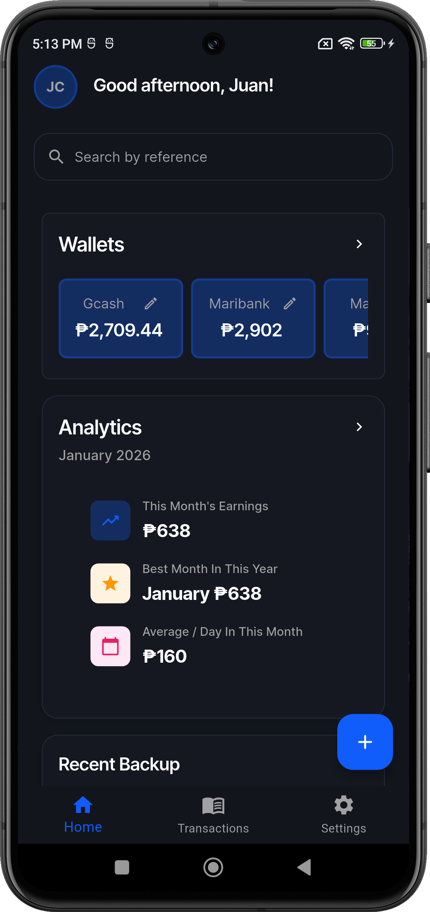
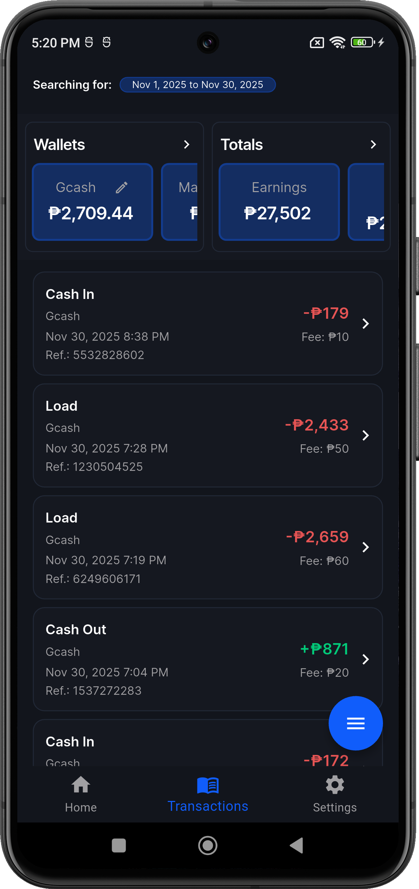
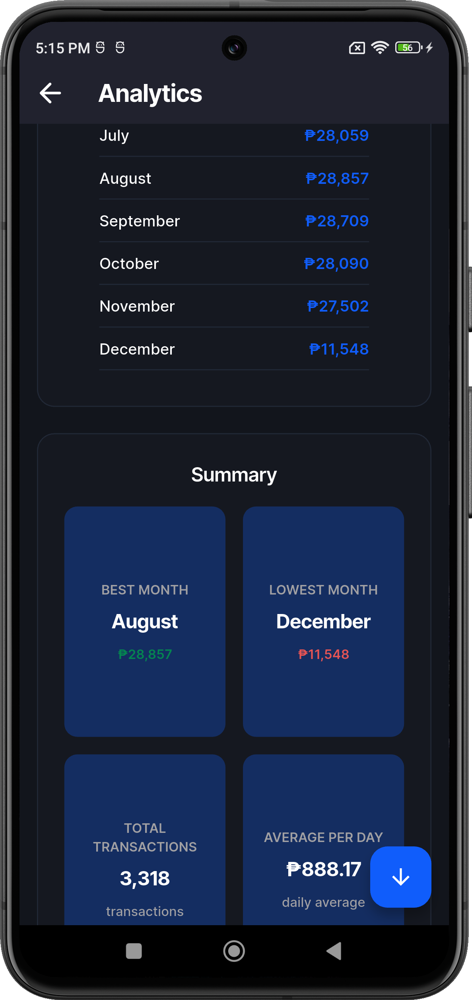
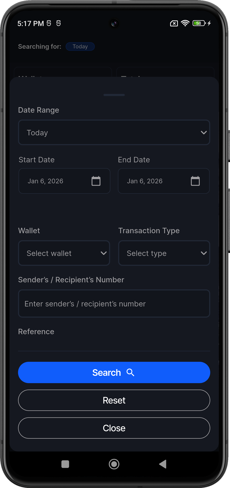

A .NET Developer with 10 years of experience building and maintaining enterprise-grade financial, HR and payroll systems. Experienced in developing complex business logic and high-reliability backend applications supporting mission-critical modules within large-scale ERP environments.
Bluesky SoftApp, Inc | May 2015 - June 2025
Supported and enhanced a full-scale Enterprise Resource Planning (ERP) system used for financial, payroll and HR operations.
Supported an in-house web app for store cash flow analytics.
Supported a management platform for educational institutions.
A Web API built with .NET 10 for e-wallet transaction management. This project serves as a showcase for modern engineering patterns designed for scalability, maintainability and data security.
The ultimate digital ledger for GCash, Maya, and e-loading businesses in the Philippines. Replaces traditional paper "listahan" with a faster, smarter, and more secure mobile solution.




I am currently seeking opportunities to apply my 10 years of experience and modern .NET expertise to your next project.
📧 roberto.ubatayjr@gmail.com
📍 Laguna, Philippines / Remote